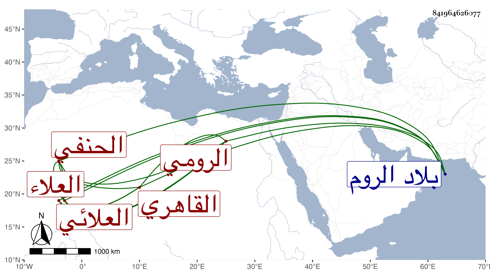

0902Sakhawi.DawLamic.ITO20230111-ara1.EIS1600.841964626077
Biography ID: 841964626077
654
علي بن إدريس العلاء الرومي العلائي ثم القاهري الحنفي جد البدر محمد بن البدر أحمد الآتي . مات في شعبان سنة اثنتين وسبعين عن بضع وسبعين وكان ممن قدم من الروم شابا فاشتغل عن ابن القباني والبدر بن العيني والطبقة في الفقه وأصله والعربية وتنزل في المؤيدية أول ما فتحت ثم لما قدم الكافياجي لزمه في ذلك حتى مات بحيث نزله في التربة الأشرفية . وحج غير مرة وكان الظاهر جقمق يسعفه في ذلك ودرس ببعض الأماكن من نواحي النيابة وكان طارح التكلف خيرا فاضلا . أفادنيه حفيده .
